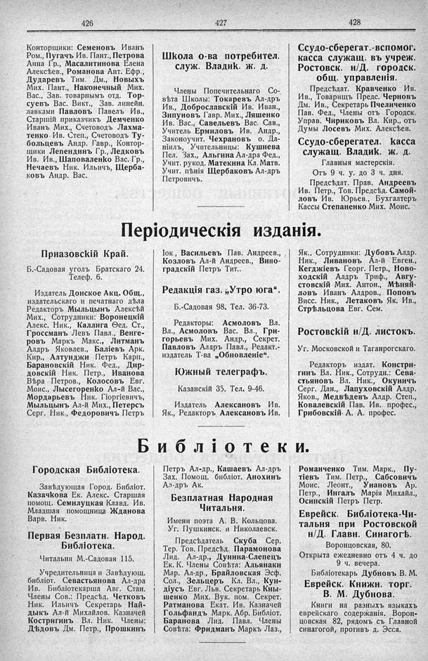

Лист источника 274
Скан

Распознанный текст
426
Конторщики: Семеновъ Иванъ
Ром., Пугачъ Ив. Пант., Петрова
Анна Гр., Масалитинова Елена
Алексѣев., Романова Ант. Ефр.,
Дударевъ Тим. Дм., Новыхъ
Мих. Пант., Наконечный Мих.
Вас., Зав. товарнымъ отд. Тор-
суевъ Вас. Викт., Зав. линейн.
лавками Павловъ Павелъ Ив.,
Старшій приказчикъ Демченко
Иванъ Мих., Счетоводъ Лахма-
тенко Ив. Степ., Счетоводъ Ту-
больцевъ Андр. Гавр., Контор-
щики Лепендинъ Гр., Ледковъ
Ив. Ив., Шаповаленко Вас. Гр.,
Нечаевъ Ник. Ильичъ, Щерба-
ковъ Андр. Вас.
427
Школа о-ва потребител.
служ. Владик. ж. д.
Члены Попечительнаго Со-
вѣта Школы: Токаревъ Ал-дръ
Ив., Доброславскій Ив. Иван.,
Зипуновъ Гавр. Мих., Ляшенко
Ив. Вас., Савельевъ Вас. Сав.,
Учитель Ермиловъ Ив. Андр.,
Законоучит. Чехрановъ о. Да-
ніилъ, Учительницы: Кушнева
Пел. Зах., Альгина Ал-дра Фед.,
Учит. рукод. Матекина Кл. Матв.
Учит. пѣнія Щербаковъ Ал-дръ
Петровичъ.
428
Ссудо-сберегат.-вспомог.
касса служащ. въ учрежд.
Ростовск. н/Д. городск.
общ. управленія.
Предсѣдат. Кравченко Ив.
Ив., Товарищъ Предс. Черновъ
Дм. Ив., Секретарь Пчеличенко
Пав. Фед., Члены отъ Городск.
Управ. Чириковъ Вл. Кир., отъ
Думы Лосевъ Мих. Алексѣев.
Ссудо-сберегател. касса
служащ. Владик. ж. д.
Главныя мастерскія.
Отъ 9 ч. у. до 3 ч. дня.
Предсѣдат. Прав. Андреевъ
Ив. Петр., Тов. Предсѣд. Самой-
ловъ Ив. Юрьев., Бухгалтеръ
Кассы Степаненко Мих. Моис.
Періодическія изданія.
Приазовскій Край.
Б.-Садовая уголъ Братскаго 24.
Телеф. 6.
Издатель Донское Акц. Общ.,
издательскаго и печатнаго дѣла
Редакторъ Мыльцынъ Алексѣй
Мих., Сотрудники: Воронецкій
Алекс. Ник., Каллига Ѳед. Ст.,
Гроссманъ Левъ Павл., Венге-
ровъ Маркъ Макс., Литманъ
Алдръ Яковлев., Баліевъ Арк.
Кир., Алтунджи Петръ Карп.,
Барановскій Ник. Фед., Дир-
довскій Ник. Петр., Иванова
Вѣра Петров., Колосовъ Евг.
Моис., Лысегоренко Ал-й Вас.,
Мордарьевъ Ник. Гіоргіевичъ,
Мыльцынъ Ал-й Мих., Петерсъ
Серг. Ник., Федоровичъ Петръ
Iок., Васильевъ Пав. Андреев.,
Козловъ Ал-й Андреев., Вино-
градскій Петръ Тит..
Редакція газ. „Утро юга“.
Б.-Садовая 98. Тел. 36-73.
Редакторы: Асмоловъ Вл.
Вл., Асмоловъ Вас. Вл., Гри-
горьевъ Мих. Андр., Секрет.
Павловъ Алдръ Павл., Редакт.-
издатель Т-ва „Обновленіе“.
Южный телеграфъ.
Казанскій 35. Тел. 9-46.
Издатель Алексановъ Ив.
Як., Редакторъ Алексановъ Ив.
Як., Сотрудники: Дубовъ Алдр.
Ник., Ливановъ Ал-й Евген.,
Кегджіевъ Георг. Петр., Ново-
ходскій Алдръ Триф., Авгу-
стовскій Мих. Антон., Мѣняй-
ловъ Иванъ Алдров., Поповъ
Висс. Ник., Летаковъ Як. Ив.,
Стрѣльцова Евг. Сем.
Ростовскій н/Д. листокъ.
Уг. Московской и Таганрогскаго.
Редакторъ издат. Констри-
гинъ Вл. Ник., Сотрудн.: Сева-
стьяновъ Вл. Ник., Окуничъ
Серг. Дан., Лапуховскій Алдр.
Яков., Медвѣдевъ Алдр. Степ.,
Ковалевскій Пав. Ив. профес.,
Грибовскій А. А. профес.
Библіотеки.
Городская Библіотека.
Завѣдующая Город. Библіот.
Казачкова Ек. Алекс. Старшая
помощ. Семилуцкая Клавд. Ив.
Младшая помощница Жданова
Варв. Ник.
Первая Безплатн. Народ.
Библіотека.
Читальня М.-Садовая 115.
Учредительница и Завѣдующ.
библіот. Севастьянова Ал-дра
Ив. Библіотекарша Авг. Стан.
Члены Сов.: Предсѣд. Четковъ
Ник. Ильичъ Секретарь Най-
дыкъ Ал-й Михайлов. Казначей
Костригинъ Вл. Ник. Члены:
Дѣдовъ Дм. Петр., Прошкинъ
Петръ Ал-др., Кашаевъ Ал-дръ
Зах. Помощ. библіот. Анохинъ
Ал-дръ Ак.
Безплатная Народная
Читальня.
Имени поэта А. В. Кольцова.
Уг. Пушкинск. и Николаевск.
Предсѣдатель Скуба Сер.
Тер. Тов. Предсѣд. Парамонова
Лид. Ал-др., Дунина-Слепецъ
Ек. К. Члены Совѣта: Альнаки
Мар. Ал-др., Брайловская Эсф.
Сол., Зельцеръ Кл. Вл., Кун-
діусъ Евг. Льв. Секретарь Кны-
шенко Мих. Вук. пом. Секрет.
Ратманова Екат. Ив. Казначей
Гольфандъ Марк. Абр. Библіот.
Баранова Лид. Павл. Члены
Совѣта: Фридманъ Маркъ Лаз.,
Романченко Тим. Марк., Пу-
тіевъ Тим. Петр., Сабсовичъ
Моис. Леонт., Унановъ Ар.
Петр., Ингалъ Марія Михайл.,
Осинскій Петръ Петр.
Еврейск. Библіотека-Чи-
тальня при Ростовской
н/Д. Главн. Синагогѣ.
Воронцовская, 80.
Открыта ежедневно отъ 4 ч. до
9 ч. вечера.
Библіотекарь Дубновъ В. М.
Еврейск. Книжн. торг.
В. М. Дубнова.
Книги на разныхъ языкахъ
еврейскаго содержанія. Ворон-
цовская 82, рядомъ съ Главной
синагогой, противъ д. Эсса.